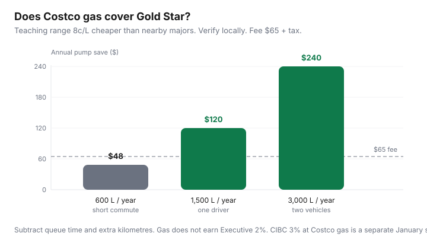

Food & Groceries · Canada
Does Costco gas make the membership worth it in Canada?
Drivers join Costco “for the gas” and then skip the arithmetic: cents per litre, litres per year, extra kilometres, twenty minutes in the pump queue, and the fact that Executive 2% does not see gas at all. Pump savings can cover Gold Star. They cannot be double-counted as Executive, groceries, and a personality.
This is Canadian Costco gas plus grocery combined ROI. Verify the board at your warehouse. GasBuddy beats a national average. Educational only — not a membership pitch.
Disclosure: Costco memberships, the CIBC Costco Mastercard, and PC Optimum / Esso as an alternative stack are offer types. Saving Optimizer may earn a commission if we later add partner links. We do not currently claim Costco, CIBC, or Imperial Oil partnerships. Confirm fees and earn on issuer and Costco.ca pages. Pay cards in full.
Key takeaways
- Gold Star is $65 plus tax (Costco.ca reviewed Sep 2026). Gas can cover that if your litre gap and volume are real.
- Typical gaps are often cited around 5–10¢/L versus nearby majors — check this week, this city.
- Executive 2% excludes gas. Do not upgrade for the pump.
- Queue time and detours are costs. A 15-minute line twice a week is not free.
- Combine gas with the monthly warehouse shop. A dedicated gas-only pilgrimage loses to a closer Esso with PC Optimum if the posted price is similar.
Typical pump savings ranges (verify locally)
Canadian 2026 explainers (for example Wealth North’s membership guide) still use a 5–10¢/L band versus surrounding stations. That is a teaching range, not a Costco promise. Urban warehouses with a station can be aggressively cheap one week and merely average the next. Independents sometimes beat Costco on the street sign. Walk to the board.
Worked examples at 8¢/L (labelled estimate):
| Litres / year | 8¢/L save | Vs $65 Gold Star |
|---|---|---|
| 600 (short commute / hybrid) | $48 | Short unless groceries also win |
| 1,500 (one typical driver) | $120 | Covers fee with room, before detours |
| 3,000 (two vehicles) | $240 | Gas alone can justify Gold Star |

Membership fee allocation to fuel vs groceries
Do not allocate the whole $65 to gas if you also buy olive oil. Pick one story for the fee, then treat the other as gravy. Clean approach:
- If gas save ≥ $65 after extra km, Gold Star is paid. Grocery unit-price wins are profit. Waste is still a cost (bulk without waste).
- If gas save is $40, you still need ~$25 of eaten grocery wins. Muffins do not count.
- If you never shop the warehouse, you are paying $65 for a gas club. That can be rational at 3,000 L. It is odd at 400 L.
The broader grocery question is is membership worth it?
Executive reward exclusions on gas
Costco Canada Executive reward terms (reviewed 16 Sep 2026) do not calculate 2% on purchases not recorded through front-end registers, including gas stations, food courts, pharmacies, and optical in Quebec. Taxes are out. The reward coupon cannot be used toward gas. $3,250 eligible-spend folklore that includes a $180 gas month is how people upgrade by accident. Full exclusion list: Executive vs Gold Star.
Upgrade trap: “I spend $400 a month at Costco” that is half gas is not $400 toward 2%. Stay Gold Star until eligible merchandise says otherwise.
Queue time and travel distance costs
Teaching all-in driving cost: ~$0.70/km (not a CRA binding rate — use your number). A 10 km extra round trip is $7. At 8¢/L you need 87.5 litres to cover the detour before time. A 20-minute queue twice a week is 34 hours a year. If you value time at even $15/hour, that is $510 of “cheap gas.” Fill when the line is short, on the warehouse day, or skip.
No station at your warehouse? Then this entire article is theoretical. Do not drive to the next city for 8¢/L.
Combining grocery + gas trip efficiency
The Canadian pattern that works: one monthly warehouse run for pantry and protein you will freeze, fill the tank on the way out, discounter flyer week for produce. That is the cart split. Gas-only Tuesday lunches in the warehouse queue are how the math dies.
CIBC Costco Mastercard (Canada, public benefits guide): 3% cash back at Costco gas, 2% at other gas/EV on the first $5,000 combined annual in that category, then 1%; warehouse merchandise typically 1%. Paid as a January Costco shop card if the account and membership are in good standing on 31 Dec. That is real money on 1,500 L if Costco gas is $1.50/L (illustrative): 1,500 × $1.50 × 3% = $67.50 — roughly another Gold Star — if you pay in full and wait for January. Interest on the card erases it.
When a non-Costco gas loyalty stack wins
Shop the posted price first. Then:
- Esso/Mobil + PC Optimum: 10 pts/L base; more with a PC Mastercard; 4,000 pts = 10¢/L on 40 L. Better when Esso is already cheaper or on the commute and you are a Loblaw household (pump comparison).
- Petro-Canada Platinum / Shell Go+ Scene+: if those stations are closer and the board is lower, Costco membership-for-gas is a hobby.
- Independents: a 12¢/L cheaper no-name still beats Costco plus a line.
Shell is Scene+ country after the Air Miles era. Do not keep a 2019 Air Miles gas story in the glovebox.
Decision: log four fill-ups — station, ¢/L, litres, extra minutes, extra km. If Costco is not winning that log, stop telling yourself the membership is “free on gas.” If it is winning, enjoy it, stay Gold Star until grocery eligible spend says Executive, and freeze the chicken so the other half of the trip is not compost.
Sources & date stamps
- Costco.ca Executive 2% Reward terms: gas excluded; coupon cannot be used on gas (reviewed 16 Sep 2026).
- Costco Canada membership FAQ: Gold Star $65, Executive $130 (plus tax).
- CIBC Costco Mastercard benefits guide: 3% Costco gas, 2% other gas/EV with $5,000 combined annual cap then 1%; January shop card (reviewed Sep 2026).
- Canadian membership explainers citing ~5–10¢/L pump gaps — verify locally the week you fill.
Frequently asked questions
Does Costco gas earn the Executive 2% reward?
No. Costco Canada’s Executive terms exclude purchases not recorded through front-end registers, including gas stations. The reward certificate also cannot be used toward gas. Treat pump savings as Gold Star value, not Executive value.
How much cheaper is Costco gas in Canada?
It varies by city and week. Canadian explainers often cite about 5–10¢/L under nearby majors. Verify on GasBuddy or the posted street prices the week you fill. Do not use a 2022 screenshot.
Can gas alone pay for Gold Star?
Sometimes. 1,500 L/year at an 8¢/L gap is $120, which covers a $65 membership before extra kilometres and queue time. 600 L/year at the same gap is $48 — not enough if you do not also win on groceries.
Does the CIBC Costco Mastercard stack at the pump?
The no-fee CIBC Costco Mastercard’s public earn includes 3% cash back at Costco gas in Canada, with other gas/EV at 2%, on the first $5,000 combined annual in that gas/EV category, then 1% (CIBC benefits guide, reviewed Sep 2026). Rewards pay as a January shop card. Separate from Executive 2%.
When should I skip Costco gas?
When the station is a long detour, the line is a habit that eats an hour, or an independent is already cheaper on the board. Shop the posted litre price first, then loyalty.